The core logic of this project is one careful distinction: a MOMENTARY utilization dip (normal during real training) must never trigger a waste alert, but a SUSTAINED idle period (a job that finished and was never torn down) always should. The diagram traces exactly how that line gets drawn.

| Node | Location | What it does |
|---|---|---|
| RATEFOUND | cost_engine.py:cost_per_point() | Looks up the GPU type in a rate-card dict. An unrecognized GPU type raises KeyError deliberately — never silently defaults to $0, which would corrupt the whole cost report without any visible error. |
| POINTLOOP / RUNENDCHECK | cost_engine.py:find_sustained_idle_windows() | Builds up a run of consecutive below-threshold readings. The run only counts as real waste if it's at least SUSTAINED_IDLE_POINTS (6 points = 30 minutes) long — anything shorter is discarded as normal noise, never recorded. |
| ALERTCHECK | cost_engine.py:analyze_instance() | idle_cost >= ALERT_IDLE_COST_THRESHOLD ($5.00) — a dollar-based alert threshold, not a percentage, so it scales sensibly across GPU types with very different hourly rates. |
Utilization stays high the entire simulated window — the idle-window scan never accumulates a run long enough to count as waste.
POINTLOOP(never below threshold) → IDLECOST(0) → ALERTCHECK(No) → NOALERT — measured: gpu-001, 0% idleHigh utilization for the first 40% of the window, then a long idle tail after the training job finished — correctly detected as a single sustained window, not dismissed as noise.
POINTLOOP(long run below threshold) → RUNENDCHECK(>=6 points → Yes) → RECORDWINDOW → IDLECOST($10.96) → ALERTCHECK(Yes) → RAISEALERT — measured: gpu-002, 59.7% idleA brief utilization dip shorter than the sustained-window requirement — correctly discarded, proving the detector doesn't false-alarm on normal training noise like data-loading stalls.
POINTLOOP(short dip, <6 points) → RUNENDCHECK(No) → DISCARDRUN — no alert, no cost impactALERT_IDLE_COST_THRESHOLD = $5.00) rather than a percentage-based one, so the alert scales sensibly across GPU types with very different hourly rates instead of treating a cheap and an expensive GPU's idle time as equally alarming at the same percentage.GPU utilization during genuinely active training is naturally spiky — data loading between batches, checkpoint saves, gradient synchronization pauses in distributed training (exactly the kind of brief low-utilization moment project 15's DDP training would show) all cause momentary utilization dips that are completely normal and not waste. Requiring the dip to persist for 6 consecutive 5-minute readings (30 minutes) filters out that normal noise while still catching the actual waste pattern this project is designed to detect: a training job that finished and the instance was simply never torn down, which shows sustained near-zero utilization indefinitely, not a brief dip. The specific threshold (30 minutes) is a judgment call balancing false positives (flagging normal training pauses) against detection lag (real waste sitting undetected a bit longer) — tunable per organization's actual workload patterns.
A silent $0 default is actively worse than crashing, because it corrupts the report without any visible signal — every downstream number (team rollups, total cost, alert thresholds) that includes that instance would be silently wrong, and nobody reviewing the final report has any way to know some subset of the numbers are fabricated zeros. A hard crash is loud, immediate, and points precisely at the actual gap (an unrecognized GPU type, meaning the rate card needs updating) — which is a maintenance cost worth paying deliberately (someone has to update the rate card when new GPU types are provisioned) rather than accepting the alternative: a cost report that looks complete and trustworthy while silently containing wrong numbers, which is a much more dangerous failure mode for something people make budget decisions from.
Consider two instances: a cheap GPU at $0.50/hr sitting 80% idle (high percentage, but only a few dollars of real waste even over hours) versus an expensive GPU at $15/hr sitting 20% idle (much lower percentage, but that 20% idle time on a $15/hr instance can easily exceed the cheap instance's total waste in absolute dollars). A percentage-based alert would flag the first instance as far more urgent (80% vs 20%), when the dollar-based reality is the opposite — the expensive instance's smaller-percentage idle time is actually costing more real money. The dollar threshold correctly prioritizes finance and engineering attention toward where the actual budget impact is largest, which is the metric that should drive alert priority for a cost-governance tool, not a percentage that ignores the instance's actual price.
I'd add a graduated remediation policy, not a single 'kill it' action: on first sustained-idle detection, send a notification to the instance owner with a grace period (e.g. 'this will be reclaimed in 2 hours unless you're still using it'); only auto-terminate after the grace period elapses with no acknowledgment or renewed activity, and even then, snapshot state before termination so a false-positive reclaim doesn't destroy real, in-progress work. The biggest risk of getting this wrong: a false positive that kills a genuinely active job — for instance, a long-running job legitimately idle between infrequent checkpoint-triggered bursts (outside this project's synthetic test patterns) could be misclassified as waste, so any auto-remediation needs a human-override path and a conservative default (notify-and-wait, not immediately terminate) until the false-positive rate is well understood from real production data.
I'd pull a sample of real historical GPU utilization telemetry from the organization's actual instances — including both known-legitimate active training runs and known-actual-waste cases (instances left running after a job finished, confirmed by checking job schedulers/logs) — and tune the threshold and window against that labeled ground truth, treating it as a classification problem: what threshold/window combination maximizes true-positive waste detection while minimizing false positives against known-legitimate training utilization patterns. The 15%/30-minute defaults in this project are reasonable, defensible starting points for a demo, but any specific organization's actual GPU workload characteristics (job types, checkpoint frequency, typical data-loading stalls) could shift the right numbers meaningfully, which is exactly why this should be validated against real data before being trusted for automated remediation decisions with real cost consequences.